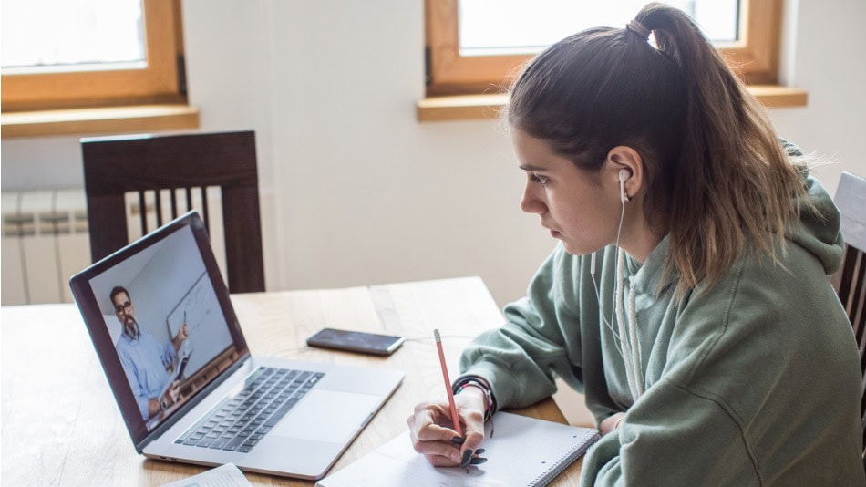

La web nos permite aprender y comunicarnos
La web nos permite estudiar desde casa, hacer trámites en línea y hablar con familiares que están lejos.

Beneficios
- Comunicación inmediata
- Educación en línea
- Acceso a trámites y servicios
Desafíos
- Brecha digital y falta de internet en zonas rurales
- Desinformación y noticias falsas
- Adicción al celular y redes sociales